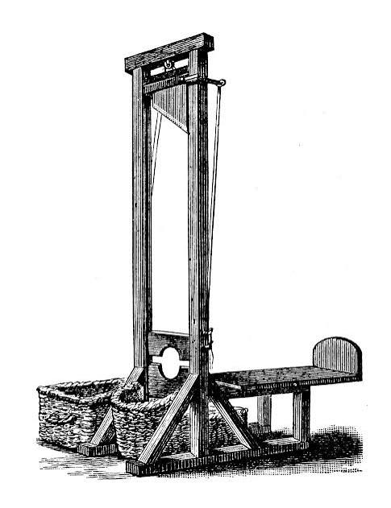

Mentalität
Was alle für selbstverständlich halten.
Mentalität und Kommunikation.
Ilias Ainous · HTWG Konstanz · Wintersemester 2026/27
Titelfolie. Kurz stehen lassen, Blickkontakt, dann ohne lange Einleitung zur nächsten Folie.
Ruft einfach rein.
(0:00–1:00) Bevor ich anfange, eine kurze Frage an euch: Was ist typisch deutsch? Ruft einfach rein.
[Drei, vier Antworten abwarten, z. B. Pünktlichkeit, Autos, Bier, Brot, Mülltrennung. Nicken, nicht kommentieren.]
Danke. Fällt euch etwas auf? Niemand hat das Grundgesetz genannt. Oder Kant. Ihr habt Dinge genannt. Und Gewohnheiten. Ein Auto. Ein Brot. Eine Uhr, die pünktlich ist.
Genau darum geht es heute: wie eine Gemeinschaft sich selbst versteht. Und warum sie das an Dingen festmacht.
Barthes · Arasse · Gries / Ilgen / Schindelbeck
(1:00–1:50) Meine These lautet: Dinge sprechen. [Pause.]
Damit meine ich: Ein Auto, eine Uhr oder eine Maschine ist nie nur ein Gegenstand. An solchen Dingen zeigt eine Gemeinschaft, wer sie ist. Oder wer sie sein will.
Wer überzeugen will, nutzt genau diese Dinge. Und dabei passiert manchmal etwas Heikles: Etwas, das Menschen gemacht haben, wirkt plötzlich natürlich. So, als wäre es schon immer so gewesen. Das nennt man einen Mythos.
Ich zeige euch das in drei Schritten: zuerst mit dem französischen Denker Roland Barthes, dann mit dem Kunsthistoriker Daniel Arasse und zum Schluss mit der Werbegeschichte von Gries, Ilgen und Schindelbeck.
Was alle für selbstverständlich halten.
„Wir sind fleißig. Wir sind pünktlich.“
Ein Ding, das jeder sofort versteht.
(1:50–2:40) Zuerst drei Begriffe, die wir heute brauchen.
Erstens: Mentalität. Damit ist gemeint, was alle in einer Gruppe für selbstverständlich halten, ohne darüber nachzudenken. Zum Beispiel, dass man pünktlich ist. Darüber diskutiert bei uns niemand, das macht man einfach. Eine Meinung kann man schnell ändern. Eine Mentalität ändert sich nur sehr langsam.
Kollektives Selbstverständnis ist das Bild, das eine Gruppe von sich selbst hat: Wir sind fleißig. Wir sind Tüftler. Wir sind pünktlich.
Und kollektive Symbolisierung heißt: Dieses Selbstbild braucht etwas zum Anfassen. Ein Ding, ein Bild, ein Wort, das jeder sofort versteht, ohne Erklärung.
Den Mythos bemerkt man nicht.
(2:40–3:40) Wie wird ein Ding zum Symbol? Das hat Roland Barthes in den 1950er-Jahren untersucht, in seinen „Mythen des Alltags“.
Sein Modell ist einfach. [Auf Ebene 1 zeigen.] Jedes Ding hat zuerst eine wörtliche Bedeutung: Ein Käfer ist ein Kleinwagen von VW. [Pfeil nach unten.] Auf diese erste Bedeutung setzt sich eine zweite: Das ganze Zeichen „Käfer“ steht für etwas anderes: für Aufstieg, für Verlässlichkeit, für das Wirtschaftswunder. Die Werbung hat es so gesagt: „Er läuft und läuft und läuft.“ Diese zweite Ebene nennt Barthes Mythos.
Und das Entscheidende: Den Mythos bemerkt man nicht. Er wirkt selbstverständlich. Natürlich.
Für die Kommunikation heißt das: Wer einen Käfer zeigt, muss gar nicht sagen „Uns geht es gut“. Das Ding sagt es für ihn.
[Begriffe nach der Übersetzung von 1964: Bedeutendes, Bedeutetes, Zeichen; im Mythos: Form, Begriff, Bedeutung. In neueren Ausgaben: Signifikant, Signifikat.]
Bedeutung wird zur Hülle.
„Das ist doch nur ein Auto.“
Gemachtes wirkt wie „schon immer so“.
„Deutsche bauen eben gute Maschinen.“
(3:40–5:05) Was steckt dahinter? Barthes sagt: Der Mythos ist gestohlene Sprache. Er nimmt eine Bedeutung, die schon da ist, zum Beispiel ein Auto, eine Maschine oder ein Wort, und benutzt sie als Hülle für seine eigene Botschaft. Nicht einmal die Technik ist davor sicher: Ein Kleinwagen wird zum Zeichen für das Wirtschaftswunder.
Und der Mythos hat immer ein Alibi. Sagt man: „Der Käfer beweist doch gar nicht, dass es allen gut ging“, heißt es sofort: „Das ist doch nur ein Auto.“ Der Mythos zieht sich einfach auf die erste Ebene zurück.
Und dabei passiert etwas Heikles: Der Mythos verwandelt Geschichte in Natur. Dass Deutsche gute Maschinen bauen, ist irgendwann entstanden: durch Wirtschaft, Politik und Werbung. Der Mythos lässt es aussehen, als wäre es schon immer so gewesen. Barthes sagt sinngemäß: Der Mythos lügt nicht. Er verbiegt.
Und genau deshalb ist der Mythos in der Kommunikation so wirksam: Er überzeugt, ohne zu argumentieren. Man kann ihm kaum widersprechen, weil er so tut, als würde er gar nichts behaupten.
Gleiche Strafe für alle

„Nationales Rasiermesser“
≈ 17.000
HingerichteteIngenieure konstruieren Funktionen.
Die Bedeutung gibt die Gesellschaft dazu.
(5:05–6:15) Was das für uns als Ingenieure heißt, zeigt Daniel Arasse am Beispiel der Guillotine.
Die Guillotine war ein Reformprojekt der Aufklärung. 1789 forderte der Arzt Joseph-Ignace Guillotin: gleiche Strafe für alle. Bis dahin wurde der Adel mit dem Schwert enthauptet, das einfache Volk gehängt oder gerädert. Die Maschine sollte gleich, schnell und schmerzlos sein. Also gerecht.
Doch in der Schreckensherrschaft 1793/94 wurde genau diese Maschine zum Symbol einer ganzen Epoche. Saint-Just nannte sie die „Maschine zum Regieren“, der Volksmund das „nationale Rasiermesser“. Rund 17.000 Menschen starben. Und die Hinrichtung wurde zum öffentlichen Schauspiel: Die Guillotine tauchte auf Stichen auf, als Spielzeug, sogar im Puppentheater. Auch das ist Kommunikation: Bilder und Spielzeug haben verbreitet, wofür die Maschine steht. Arasse spricht vom Imaginären der Schreckensherrschaft.
Arasse zeigt: Die Bedeutung steckt nicht in der Konstruktion. Wir Ingenieure konstruieren Funktionen. [Pause.] Die Bedeutung gibt die Gesellschaft dazu.
Werbung spürt auf, verdichtet und gibt vor.
Mach mal PauseCoca-Cola Pause im Wirtschaftswunder
Keine Experimente!CDU Sicherheit
Der Geschmack der HeimatOstprodukte Identität
(6:15–7:55) Und was hat das alles mit Kommunikation zu tun? Sehr viel. Wer kommuniziert, ob in der Werbung, in der Politik oder in einem Referat, will verstanden werden. Und am schnellsten versteht man uns, wenn wir an etwas anknüpfen, das die anderen schon kennen und für selbstverständlich halten: an ihre Mentalität.
Genau das zeigen Gries, Ilgen und Schindelbeck am Beispiel der Werbung. Werbung muss die Gedanken, Gefühle und Wünsche der Menschen aufspüren, sie in einem Satz oder Bild verdichten und gibt sie dann wieder vor. Kommunikation läuft also in beide Richtungen: Die Werber hören hin, und die Umworbenen übernehmen das Bild. So entstehen kollektive Selbstverständnisse. Deshalb ist Werbung für Historiker eine Sonde in die Zeit.
[Auf den Zeitstrahl zeigen.] „Mach mal Pause“ von Coca-Cola, 1950er. Für eine Gesellschaft, die im Wirtschaftswunder schuftet und sich die Pause erst erlauben muss. „Keine Experimente!“, der CDU-Wahlslogan von 1957, der das Sicherheitsbedürfnis der Nachkriegszeit trifft. Und nach der Wende kamen Ostprodukte zurück in die Regale, als „Geschmack der Heimat“. Ein Produkt wird zum Träger ostdeutscher Identität.
Alle drei funktionieren, weil sie an eine vorhandene Mentalität anknüpfen. Das ist die Verbindung: Mentalität ist das, was alle teilen. Kommunikation wirkt, wenn sie daran anknüpft.
1887
Pflicht-Kennzeichnung
heute
Qualitätsmythos
(7:55–8:45) Was nehmen wir mit? Drei Punkte.
Erstens: Gemeinschaften erkennen sich in Dingen wieder: im Auto, in der Maschine.
Zweitens: Wer überzeugen will, muss an diese Symbole anknüpfen. Das gilt für Werbung, für Politik und für jede Präsentation.
Drittens: Wer Mythen lesen kann, ist schwerer zu manipulieren.
Ein letztes Beispiel: „Made in Germany“ geht auf ein britisches Gesetz von 1887 zurück. Ausländische Waren, die wie britische aussahen, mussten ihr Herkunftsland angeben. Das war vor allem gegen minderwertige Ware aus Deutschland gedacht. Die Kennzeichnung sollte die Käufer warnen. Heute steht sie für deutsche Qualität. Geschichte, die zur Natur geworden ist.
Danke.
(8:45–9:00) Also: Wenn euch das nächste Mal jemand erzählt, was typisch deutsch ist, fragt euch, wer euch das erzählt. Und was er euch verkaufen will.
[Pause.] Danke.
[Rückbezug auf die Einstiegsfrage. Blickkontakt halten, nicht sofort wegklicken.]